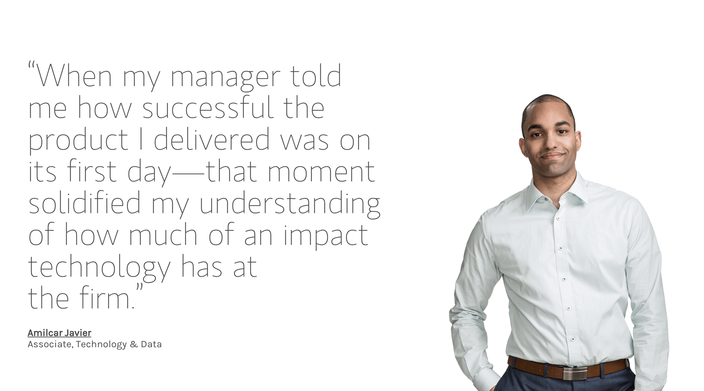

Program Area
Placement and Duration
The Technology Full-time Analyst Program is offered in London, Budapest and Glasgow. Analysts will be pre-placed to a department within Technology and, upon completion of the training program, they will join a technology team that best matches their skills and interests.
Program Duties And Responsibilities
Based on their skills, Analysts will be matched to available projects within a Development or Infrastructure team:
Development Teams: Our development teams design, develop and maintain applications used by our business units. Daily activities include meeting with clients to gather and analyse requirements. They make system design decisions, evaluate, integrate and develop necessary software, and then test and deploy applications to production. Developing high-performing, low-latency electronic trading systems and evolving complex workflows and life-cycle management capabilities are just some of the projects available for developers.
Infrastructure Teams: Our infrastructure-facing teams develop cutting-edge systems to run our business. Our engineers provide tools, applications and platforms such as the Firm’s networks, computing hardware, operating systems and databases for the Firm’s trading applications, mobile applications and other end-user applications. Engineering the Firm’s websites, managing the Windows plant and developing a client reporting delivery system.

Required Qualities/Skills/Qualifications
You hold or are pursuing a Bachelor’s, Master’s or Doctorate degree in Computer Science, Computer or Electrical Engineering, Mathematics, Physics or a related technology / science / engineering discipline.
You have outstanding academic achievements and a minimum 2.1 honours degree (United Kingdom) or equivalent.
You have experience with at least one programming language: e.g., Java, C++ or C#.
Preferred Qualities/Skills/Qualifications
You have operating system knowledge (Windows or Unix).
You have excellent problem-solving and analytical skills, good comprehension of data structures, algorithms and complexity theory, strong database and scripting skills.
You have excellent communication and teamwork skills.
You are fluent in English.
You have a demonstrated interest in technology.
What we Offer
The program begins with a six-week orientation in New York, where Analysts gather from around the world to learn about the firm and hear from senior executives. Rigorous formal and informal training continues tailored to your program year.
The program begins with a six-week orientation in New York, where Analysts gather from around the world to learn about the firm and hear from senior executives. Rigorous formal and informal training continues tailored to your program year.
| Shift |
Day Job |
| Travelling Required |
No |
| Program Reference Number |
S2T4GHG32 |
| Program Posted |
Dec 24, 2015 |
| Program Deadline |
May 25, 2016 |
Locations
London, United Kingdom 3221312313213131
|
Paris, France
|
New York, USA
In 1977, Morgan Stanley opened its European headquarters in London, where it now has over 5,000 staff. Morgan Stanley is one of the preeminent financial services firms in the UK, with longstanding client relationships and a leading role in many landmark transactions. Our professionals value individual intellect as much as teamwork. We offer nimble, innovative services and products tailored to our clients’ needs.